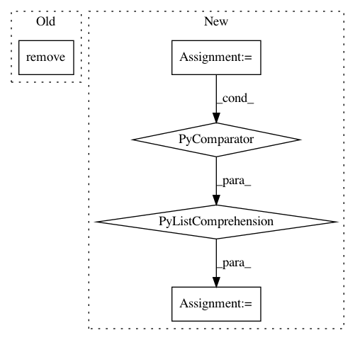

044f5f26e1b661c74c6cb60aef2906a6e372a2f1,doc/nbconvert_filter.py,RemoveWidgetNotice,preprocess_cell,#RemoveWidgetNotice#,10
Before Change
to_delete.append(o)
for o in to_delete:
//print("removing: ", o)
outputs.remove(o)
return cell, resources
After Change
def preprocess_cell(self, cell, resources, index):
if "outputs" in cell:
outputs_ = [o for o in cell["outputs"] // list of dicts
if ("data" in o and "application/vnd.jupyter.widget-view+json" not in o["data"])
]
cell["outputs"] = outputs_
return cell, resources
In pattern: SUPERPATTERN
Frequency: 3
Non-data size: 5
Instances
Project Name: markovmodel/PyEMMA
Commit Name: 044f5f26e1b661c74c6cb60aef2906a6e372a2f1
Time: 2018-09-10
Author: m.scherer@fu-berlin.de
File Name: doc/nbconvert_filter.py
Class Name: RemoveWidgetNotice
Method Name: preprocess_cell
Project Name: astroML/astroML
Commit Name: 44ad29832a7c8adb134f53f1017dd7c0c7fc98ef
Time: 2012-10-28
Author: vanderplas@astro.washington.edu
File Name: astroML/plotting/tools.py
Class Name:
Method Name: devectorize_axes
Project Name: daniellerch/aletheia
Commit Name: 1bcad437d2c1b57d582b893427bd53cd90eeafbf
Time: 2019-05-12
Author: dlerch@gmail.com
File Name: aletheia/feaext.py
Class Name:
Method Name: extract_features